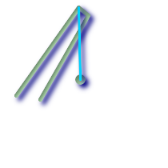
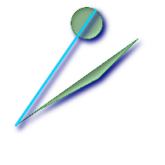
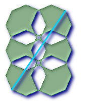

ST_LongestLine — 二つのジオメトリの2次元長が最長となるラインを返します。見つかったラインが複数ある場合は、最初のもののみ返します。返されるラインは常にg1側を始点、g2側を終点とします。この関数が返すラインの長さは、常に始点をg1に終点をg2にそれぞれ指定した場合のST_MaxDistanceが返す値と同じになります。
geometry ST_LongestLine(geometry g1, geometry g2);
 ポイントとラインとの間の最長線
SELECT ST_AsText(
ST_LongestLine('POINT(100 100)'::geometry,
'LINESTRING (20 80, 98 190, 110 180, 50 75 )'::geometry)
) As lline;
lline
-----------------
LINESTRING(100 100,98 190)
|  ポリゴンとポリゴンとの間の最長線
SELECT ST_AsText(
ST_LongestLine(
ST_GeomFromText('POLYGON((175 150, 20 40,
50 60, 125 100, 175 150))'),
ST_Buffer(ST_GeomFromText('POINT(110 170)'), 20)
)
) As llinewkt;
lline
-----------------
LINESTRING(20 40,121.111404660392 186.629392246051)
|
 素敵な街のある部分から他の部分への直線移動距離 (最大距離=この線の長さ)
SELECT ST_AsText(ST_LongestLine(c.the_geom, c.the_geom)) As llinewkt,
ST_MaxDistance(c.the_geom,c.the_geom) As max_dist,
ST_Length(ST_LongestLine(c.the_geom, c.the_geom)) As lenll
FROM (SELECT ST_BuildArea(ST_Collect(the_geom)) As the_geom
FROM (SELECT ST_Translate(ST_SnapToGrid(ST_Buffer(ST_Point(50 ,generate_series(50,190, 50)
),40, 'quad_segs=2'),1), x, 0) As the_geom
FROM generate_series(1,100,50) As x) AS foo
) As c;
llinewkt | max_dist | lenll
---------------------------+------------------+------------------
LINESTRING(23 22,129 178) | 188.605408193933 | 188.605408193933
|